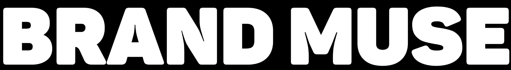

Unique ReachExclude, require or re-price a creator and the plan updates instantly. Your starting roster is the biggest creators by followers that fit the budget — the roster a brand might pick without overlap data.
Spend is $22,000 of $23,750. Channel 9mdQ carries 20% overlap with Channel EERg — the pair to watch if you add a second home-office channel.
17 of 17 skipped creators share part of their audience with the plan. Bars show how much is already reached.
Channel S9Fg: 93% of its modeled sampled audience is already represented by the recommended roster, mostly through Channel j_0Q (28,840 shared commenters), Channel te1g (26,780 shared commenters) and Channel 9mdQ (22,660 shared commenters). Adding it at $2,000 would add 7,303 to the score. Quote exceeds the remaining budget in this plan.
Which creators share the same fans? We count people who commented on both creators' recent videos.
Of about 510,000 followers of Channel 9mdQ, this share also follow:
Higher % means more of the same fans, so pairing those two creators reaches fewer new people. YouTube pairs are measured from shared commenters; pairs with Instagram or TikTok are estimated from audience profiles.
Creators whose fans overlap the most, grouped together.